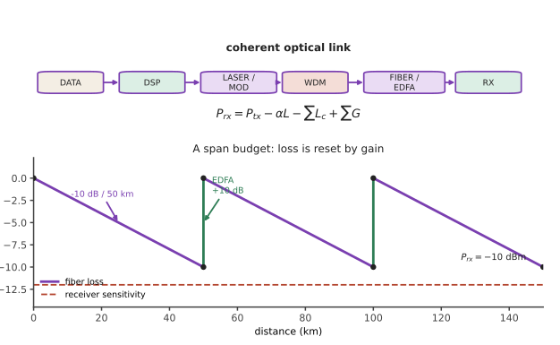

光纤 II · 光通信系统
层次：本科核心 + 业界主战场 ｜ 🔗 与语言站线二（信息论）、微电子站第十八页（CPO）互链。 光通信在三十余年里把单纤容量提升了约六个数量级。本页讲清这个增长靠什么实现、系统由哪些部分构成、以及它现在逼近的极限——香农极限在光纤中的具体形态。

一、系统构成
关键部件：
- 光源：DFB 激光（单纵模，第八页），需隔离器保护（第五页）；
- 调制器：直接调制（简单、有啁啾）或外调制（马赫-曾德尔，第三页结构；铌酸锂或硅光，第十五页）；
- 放大器：EDFA（第十四页）；
- 接收机：PIN/APD（直接探测）或相干接收（第九页）。
二、容量增长靠什么
四个维度，逐个被用尽：
① 波长复用（WDM/DWDM）——最大的一次跃升。 在一根光纤中同时传输几十到上百个波长通道，间隔可低至 50 GHz 甚至更密（灵活栅格）。C 带内可容纳约 80–100 个通道。
为什么可行：EDFA 能同时放大整个 C 带的所有波长（第十四页）——这是 WDM 得以规模化的关键使能技术。若每个波长都要单独光电转换再放大，成本将无法承受。
② 提高单通道速率：10G → 40G → 100G → 400G → 800G。受限于电子学带宽与器件速度。
③ 高阶调制格式：从 OOK（开关键控）到 QPSK、16QAM、64QAM ——每符号携带更多比特。
这需要相干探测（第九页）：因为高阶格式使用相位信息，而直接探测只测强度。
代价：星座点越密，对噪声越敏感。所需 OSNR 随阶数上升 → 高阶格式只能用于较短距离。这是"频谱效率与传输距离"的根本权衡，与 🔗 语言站信息论的容量-噪声关系是同一回事。
④ 偏振复用（PDM）：两个正交偏振各传一路 → 容量翻倍（第五页）。偏振漂移由 DSP 跟踪补偿。
合起来：现代相干系统 = PDM + 高阶 QAM + WDM + 强 DSP，单纤容量可达数十 Tb/s 量级。
三、DSP：现代光通信的核心
这是过去十五年最大的变化——光通信在很大程度上变成了数字信号处理问题。
接收端 DSP 承担：
- 色散补偿（静态，用数字滤波器，第十二页）；
- 偏振解复用与 PMD 跟踪（动态，自适应滤波）；
- 载波频偏与相位恢复；
- 非线性补偿（部分）；
- 前向纠错（FEC）：软判决 FEC 的编码增益可达 10 dB 以上，这直接等价于传输距离的成倍延长。
FEC 的地位值得强调：现代系统的原始误码率高到无法直接使用（可达 \(10^{-2}\) 量级），全靠 FEC 纠正到 \(10^{-15}\) 以下。"用编码换功率"是信息论最直接的工程兑现（🔗 语言站线二：信道编码定理）。
一个判断：光通信的进步，近年主要来自 DSP 与 CMOS 工艺的进步，而非光学器件本身。DSP 芯片的算力随摩尔定律增长（🔗 微电子站），使得越来越复杂的补偿算法变得可行。这是两个学科耦合的典型例子。
四、极限：非线性香农极限
光纤不是线性信道。 功率提高时，克尔非线性（第十四页）引起自相位调制、交叉相位调制、四波混频，使不同通道互相干扰。
于是出现一个特有的现象：
- 功率太低 → 放大器噪声（ASE）主导，SNR 差；
- 功率太高 → 非线性噪声主导，SNR 反而下降；
- 中间存在一个最优功率，对应最大可达容量。
这条曲线称为"非线性香农极限"——它比线性信道的香农容量更严格，且不能简单靠加大功率来突破。
这与本讲义库其他站的"不可能性定律"是同一类：🔗 微电子站的 60 mV/dec、自动化站的水床效应、本站第七页的 BPP 守恒与第九页的散粒噪声极限。成熟工程学科都知道自己的天花板在哪。
突破的方向只剩"增加并行度"：
- 空分复用（SDM）：多芯光纤、少模光纤（第十二页）；
- 拓展波段：从 C 带扩展到 L、S 带（需要新的放大器）；
- 空芯光纤：非线性极低，可提高功率上限。
五、网络与应用形态
| 场景 | 距离 | 特点 |
|---|---|---|
| 数据中心内 | < 数百米 | 多模/短距单模，成本与功耗敏感，VCSEL 或硅光 |
| 数据中心互联（DCI） | 数十–百公里 | 相干，可插拔模块 |
| 城域网 | 百公里级 | ROADM 灵活组网 |
| 长途干线 | 数百–数千公里 | 相干 + EDFA 链 + 强 FEC |
| 海底光缆 | 数千公里 | 中继供电与可靠性是核心约束，几十年免维护 |
| 接入网（PON） | 数公里 | 点到多点、无源分光，成本极度敏感 |
当前最大的驱动力是 AI 数据中心：GPU 集群之间需要巨大的互连带宽，且功耗成为首要约束。
这催生了共封装光学（CPO）（🔗 微电子站第十八页）：把光引擎与交换芯片封装在一起，省掉长电走线的驱动与均衡功耗。"每比特焦耳"取代"每秒比特"成为核心指标——这是光互连领域近年最重要的观念转变。
六、要点
- 容量增长靠四个维度：WDM、单通道速率、高阶调制、偏振复用；EDFA 是 WDM 的使能技术；
- 高阶调制需要相干探测，且频谱效率与传输距离根本冲突；
- 现代光通信在很大程度上是 DSP 问题；FEC 提供 10 dB 以上编码增益；
- 非线性香农极限：功率过高反而降低容量，存在最优功率；
- 突破方向是并行度（SDM、拓展波段、空芯光纤）；
- AI 数据中心使"每比特焦耳"成为核心指标，驱动 CPO。
下一页：让光通信成为可能的两项关键物理——光放大与非线性效应。前者是使能技术，后者既是限制也是工具。